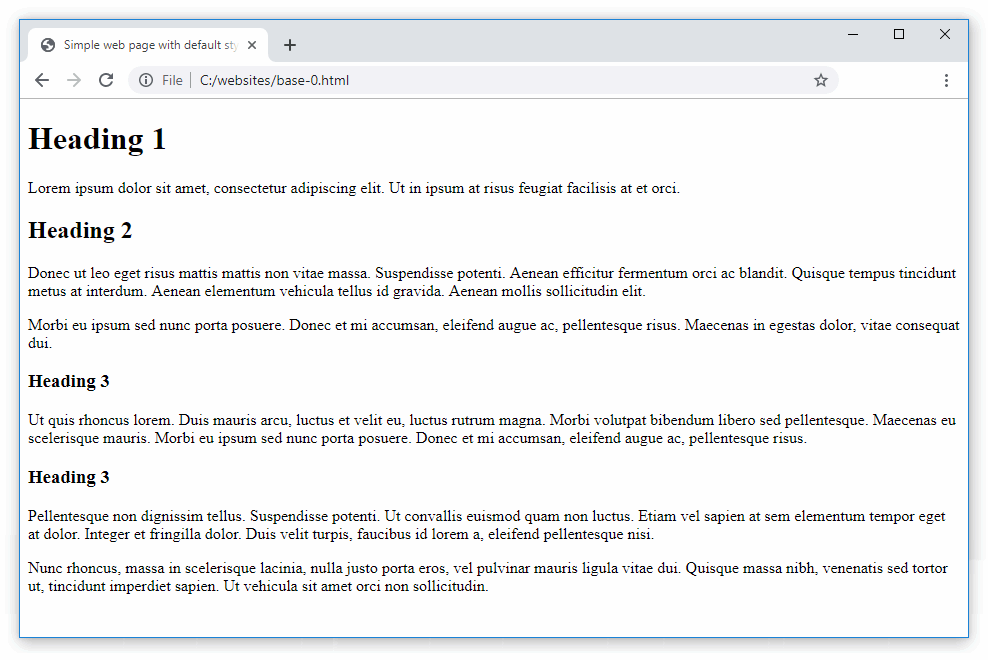
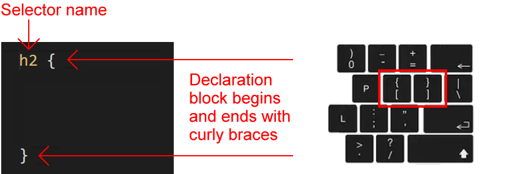

Learning Goals
At the end of this Tutorial you will be able to:
- Understand the basic structure of a CSS stylesheet.
- Understand these CSS terms: selector, declaration block, style rule, property and value.
- Recognise the most commonly used CSS properties in web design.
Applying your own styles to your web pages
In the previous Working with HTML Tutorial, you added markup tags such as <h1> and <h2> to the text of your sample HTML files.
When you saved your files and displayed them in a web browser, you could see the text styled with headings, sub-headings and paragraphs.
Where did these styles come from?
The answer is that these are default styles created by the web browser – Google Chrome, Mozilla Firefox or whatever.
To create and apply your own styles to a web page, you need to follow these steps:
- Create a CSS file (stylesheet).
- In the CSS file, create your styles for headings, paragraphs and so on.
- And, in the <head> of your web page, add a link to your CSS file.
The next Tutorial, Styling Web Pages with CSS, takes you through the above steps based on the four sample web pages you created in the Introduction to HTML Tutorial.
This Tutorial explains the basic structure of a CSS stylesheet file, and introduces the CSS properties most commonly used by web designers when styling web pages.
The structure of a CSS file
Some CSS files are only 30-50 lines long. Others may have as many as 50,000 lines. In every case, they all have a similar structure.
All CSS files consist of so-called selectors. Each has a selector name (such as h1 or p) that matches a tag name (such as h1 or p) in a linked HTML file.
After the selector comes what is called a declaration block. These always begin with an opening curly brace ( { ) and end with a closing curly brace ( } ).
CSS selectors
You use a selector in a CSS file to ‘target’ elements in a linked web page. For example:
In the simplest case:
- The h3 selector in a CSS file will apply its styles to all <h3> sub-headings in a linked web page. It does not matter whether there is one or several <h3> elements in the web page. All will be styled by the same h3 selector in the CSS file.
- Similarly, all <p> text paragraphs in a web page will be styled by the p selector in the linked CSS file.
CSS properties and values
Inside every CSS declaration block is at least one style rule that consists of two parts:
- A property and
- A value.
Below you can see two sample rules, each on a line of its own. The font-weight and font-size are the properties, and normal and 16px are the values.
font-weight: normal;
font-size: 16px;
Every property must be separated from its associated value by a colon (:) character.

As you can see from the example below, it makes no sense to enter a property on its own without a value.
/* Any particular value? 16px maybe? Or perhaps 64px? */
h2 {
font-size
}
Conversely, a value entered on its own without a property also makes no sense. As the following example makes clear.
/* Size of what? Font? Bottom margin? Left margin? */
h2 {
24px
}
Style rules must be separated from one another by a semi-colon character (;). Otherwise, the web browser cannot tell when one style rule ends and the next style rule begins.

As for the last rule before a closing curly brace, you can follow it with a semi-colon. But it is not necessary. The following two examples have exactly the same effect.
font-weight: normal;
font-size: 16px;
}
font-weight: normal;
font-size: 16px
}
When a selector contains just one, two or three rules, it is often typed on a single line. See the example below.
p {
font-family: sans-serif; font-size: 16px; margin-bottom: 12px
}
Or, more simply:
p { font-family: sans-serif; font-size: 16px; margin-bottom: 12px }
Indentation guides
Visual Studio Code displays vertical lines called indentation guides to help you visually organise blocks of indented text.
Indented text is text that is ‘pushed in ’ from the left margin, typically by pressing the Tab key.
Here are the steps to follow when creating a new style in a CSS file:
- Type the selector (such h1, h2 or whatever) directly against the left margin, and follow it with a single space and then type an opening curly brace.
VS Code will automatically follow the opening curly brace you typed with a closing curly brace.

- Press the Enter key a few times to create some blank lines.
- Now, type the one or more CSS properties and values. If necessary, indent each line from the left margin by pressing the Tab key.

Indentation guides can also help you identify errors such as missing (or extra) opening or closing curly braces. In the example below, you can see that the opening and closing curly braces line up correctly.

In the two examples below, the first is missing a closing curly brace, while the second has two closing braces.

The common CSS properties
The following table lists and describes the main CSS properties you will use when styling web pages.

The next sections of this Tutorial look in more detail at each of these widely-used CSS properties.
Styling with font-family
The two basic values of the font-family property in CSS are serif and sans-serif.
- Serifs are the small lines or ‘squiggles’ at the ends of letter, numbers and other characters.
- Sans-serif fonts do not have these serifs (‘Sans’ is French for ‘without’.)

By default, web browsers display both headings and paragraphs in a serif font.
/* These two style rules make no difference.
Both h2 and h3 sub-headings are already serif by default. */
h2 ( font-family: serif }
h3 ( font-family: serif }
/* This style rule does make a difference. */
p ( font-family: sans-serif }
For printed documents, such as books, newspapers, magazines and so on...
- Serif fonts are generally used for long paragraphs of text. This is because the serifs help the human eye to recognise whole words rather than sequences of individual letters.
- For headings and short blocks of text, either serif or sans-serif fonts are equally appropriate choices.
In web pages, however, there is no evidence that paragraphs of text are more readable in serif fonts. So you will see fonts of either the serif or sans-serif family used for various elements of web pages.

Styling with font-size
As its name suggests, the font-size property sets the size of text in headings and paragraphs.
- In print design, font sizes are measured in units called points or pt for short.
- In web design, font sizes can be measured in different units. The simplest of these is px, which is short for pixels.
Here are the default values of font-size for headings and paragraphs used by most web browsers.
/* Default values for font-sizes in most web browsers. */
h1 ( font-size: 32px }
h2 ( font-size: 24px }
h3 ( font-size: 18px }
p ( font-size: 16px }
Particularly for <h1> and <h2> headings, the font-size values you choose will depend on the number of characters in the heading. See the examples below.

Styling with font-weight
The two basic values of font-weight are normal and bold. By default, web browsers display paragraphs in normal weight and all headings and sub-headings in bold.
/* This does make a difference. Headings are bold by default. */
h2 ( font-weight: normal }
/* This makes no difference. Paragraphs are normal by default. */
p ( font-weight: normal }
As you learnt in the previous Introduction to HTML Tutorial, you can make one or a few words in an element bold with the <b> ... </b> tag pair in HTML.

To make entire heading or text paragraph bold, however, use the font-weight: bold property and value pair in CSS.
Styling with font-style
The two basic values of font-style are normal and italic. By default, web browsers display both all headings, sub-headings and text paragraphs in the normal font-style.
/* These make no difference. Both are already normal by default. */
h2 ( font-style: normal }
p ( font-style: normal }
As you learnt in the previous Introduction to HTML Tutorial, you can make one or a few words in an element italic with the <i> ... </i> tag pair in HTML.

To make entire heading or text paragraph bold, however, use the font-style: italic property and value pair in CSS. The two examples below are from Lou Levits.

Styling with color
You use the color property (US spelling) to set the colour of headings, sub-headings and text paragraphs. By default, web browsers display text in black.
/* These make no difference. Both are already black by default. */
h2 ( color: black }
p ( color: black }
In web design, the simplest way of setting colours is to use colour names. Many colour names are both easy-to-remember and self-explanatory. For example, yellow, purple and so on. Other colour names are less obvious, such as hotpink, mediumvioletred and lavenderblush.
Colour names are not case-sensitive. For example, these three versions of the same colour name are all valid.
h1 { color: DarkOrchid }
h2 { color: darkorchid }
h3 { color: DARKORCHID }
You can see a full list of colour names on this W3 Schools web page.
In a later Tutorial, Colours and Web Design, you will learn about two of the colour name systems used by professional web designers: the RGB system and the hex code system.
Styling with letter-spacing
The letter-spacing property sets the spacing between text characters within a heading, sub-heading or paragraph. Like the font-size property, you can set letter-spacing in px units.
- To reduce the letter-spacing, use a negative value. For example:
h1 { /* This REDUCES the letter-spacing. */ letter-spacing: -2px }
- To increase the letter-spacing, use a positive value. For example:
h2 ( /* This INCREASES the letter-spacing. */ letter-spacing: 6px }
In web pages, reduced or increased letter-spacing is often used in headings for visual effect. In text paragraphs, however, web designers typically use default letter spacing.
You will commonly see letter spacing effects applied in brand logos to achieve a distinctive appearance. See the examples below.

Styling with text-transform
You can use the text-transform property to control how the web browser displays text in headings, sub-headings or paragraphs as capital letters.
The most commonly-used value of the text-transform property is capitalize. The forces all the text to appear in CAPITAL LETTERS, regardless of how the text is typed in the web page.
/* These force all the text to display in CAPITAL LETTERS. */
h3 ( text-transform: capitalize }
p ( text-transform: capitalize }
Styling with text-align
In Microsoft Word or other word processors, you are typically offered four choices for aligning both headings and text paragraphs: Left, Centered, Right and Justified.

In CSS, the equivalent alignment values are:
text-align: left; /* Default value */
text-align: center;
text-align: right;
text-align: justify; /* Not recommended */
Below are examples of the left, center and right values of the text-align property in CSS.

The justify value of text-align is not recommended because web browsers do not distribute spacing between characters and words proportionally.
Styling with line-height
The line-height property sets the vertical distance between lines of text within an element. For most web browsers, the default line-height is in the range 1.1 to 1.2.
- The lines in headings are typically close together. So you usually will not want to change the line-height for your <h1>, <h2> and <h3> tags.
- For <p> paragraphs of text, however, it is a good idea to increase the line-height from the default value to a value between 1.5 and 1.7.

Styling with margin-top and margin-bottom
The margin-top and margin-bottom properties control how much vertical spacing is displayed above and below web page elements such as headings and text paragraph.
Like the font-size property, these two properties can be written in px (for pixel) units.
Consider the Microsoft Word Paragraph dialog box below.

The equivalent in CSS would be:
- The margin-top is set to 0.
- The margin-bottom is set to 12px.
- The line-height is set to 1.6.
Below you can see examples of margin-top, margin-bottom and line-height values in CSS.

Styling with background-color
By default, browsers display web pages with a white background. You can change this by setting a CSS background-color property for the <body> tag.
(Again, note the US-style spelling of this property.)
/* Web Page Background Colour */ body { background-color: red }
In a later Tutorial, Colours and Web Design, you will learn about two of the colour name systems used by professional web designers: the RGB system and the hex code system.
Adding comments to a CSS stylesheet
In a CSS file, a comment is one or more lines of text that have no effect how the web page is displayed by the web browser.
You can see an example of a short, one-line comment below.
/* This is a comment in a CSS file */
And here is an example of a longer, multi-line comment.
/*
Generated by Animista on 2019-4-3 8:17:9
http://animista.net, @cssanimista
*/
Follow these steps to create a comment in VS Code.
- Type a forward slash / and an asterisk *. This is the opening part of the CSS comment.
- Type an asterisk * and a forward slash /.
This is the closing part of the CSS comment.

- Click in the middle of the two asterisks and press the Spacebar a few times.

- Type your comment in the blank spaces.
By default, VS Code displays CSS comments in a dark green colour.
Further resources
Hello CSS
From Interneting is Hard
Fundamental text and font styling
From the Mozilla Developer Network
Tutorial: CSS for absolute beginners
By Luke Fabish at the Luke Fabish Blog